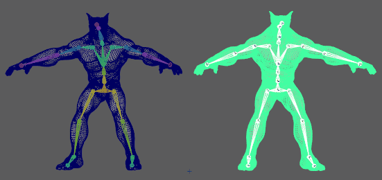

可以在角色上烘焙变形器以便为具有有限变形器支持的游戏引擎近似计算变形。
烘焙角色的变形器
- 选择。此时将显示烘焙变形器工具(Bake Deformer Tool)窗口。
- 在角色层级顶部（例如髋部）单击鼠标右键，然后从上下文菜单中选择“选择层级”(Select Hierarchy)。此时将选择整个角色骨架。
- 按 Shift 键并选择角色网格。
- 单击“烘焙变形器工具”(Bake Deformer Tool)窗口中的“源”(Source)，将角色的特性添加到“源”(Source)字段。
注： 如果将多个蒙皮簇添加到目标网格，将显示一个对话框，询问您是否要创建另一个蒙皮簇。这是为了防止意外覆盖第一个蒙皮簇。
- 现在，对目标角色执行相同操作。（在髋部关节上单击鼠标右键，选择“选择层级”(Select Hierarchy)，然后按 Shift 键并选择网格。）
- 单击“烘焙变形器工具”(Bake Deformer Tool)窗口中的“目标”(Destination)，将角色的特性添加到“目标”(Destination)字段。
- 在“运动范围”(Range of Motion)选项中定义变形采样范围。
- 选择“自动”(Automatic)（默认设置），以使用源角色上的所有动画作为变形的参考。
- 如果要在“开始时间”(Start time)和“结束时间”(End time)字段设置的部分中使用自定义动画范围，请选择“开始/结束”(Start/End)。
- 选择“时间滑块”(Time Slider)以仅使用时间滑块(Time Slider)中显示的动画。
- 单击“应用”(Apply)。源角色将执行一系列快速变换来计算变形器权重。
